a. Bán trục trên hệ thống treo phụ thuộc
Các bán trục được sử dụng trên ô tô hiện nay được phân loại theo đặc điểm kết cấu các ổ đỡ phía ngoài của bán trục mà các ổ này xác định mức độ chịu tải trọng uốn của bán trục. Bán trục nối từ bánh răng bán trục của bộ vi sai tới các bánh xe chủ động. Bán trục thường phải đỡ toàn bộ trọng lượng xe cũng như chịu tải trọng của xe, tải trọng ngang khi xe quay vòng do đó chúng thường được tôi cứng để có thể tăng thêm chiều dài. Trên xe hiện nay việc bố trí trên hệ thống treo phụ thuộc thường dùng bán trục giảm tải ½ . Những xe hai hoặc ba cầu chủ động và một số xe tải nặng có công suất cao dùng bán trục giảm tải ¾ và bán trục giảm tải hoàn toàn. Loại bán trục không giảm tải hiện nay không còn được sử dụng.
Bán trục giảm tải một nửa
- Bán trục giảm tải một nửa Hình 7.24 : Là loại bán trục mà đầu phía trong tỳ lên vỏ vi sai 32 còn đầu phía ngoài có ổ đỡ 6 mà vòng trong lắp trực tiếp lên bán trục 1 còn vòng ngoài tỳ lên cốc nối 8 với vỏ bán trục. Bán trục giảm tải một nửa truyền mô men đến bánh xe chủ động.
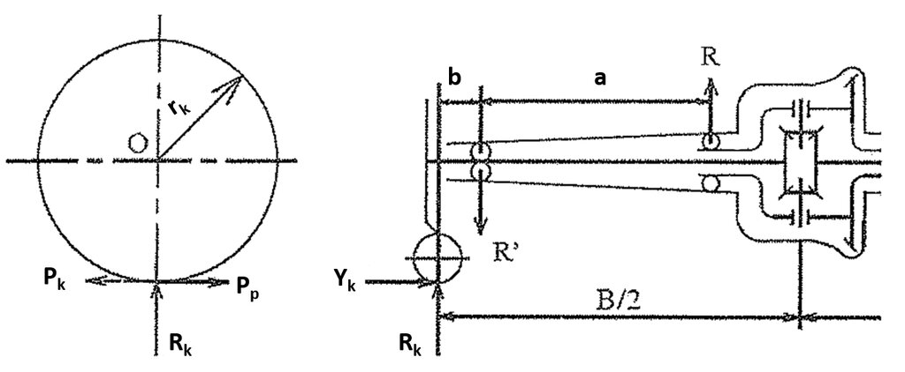
Hình 7.24. Sơ đồ lực tác dụng lên bán trục giảm tải một nửa
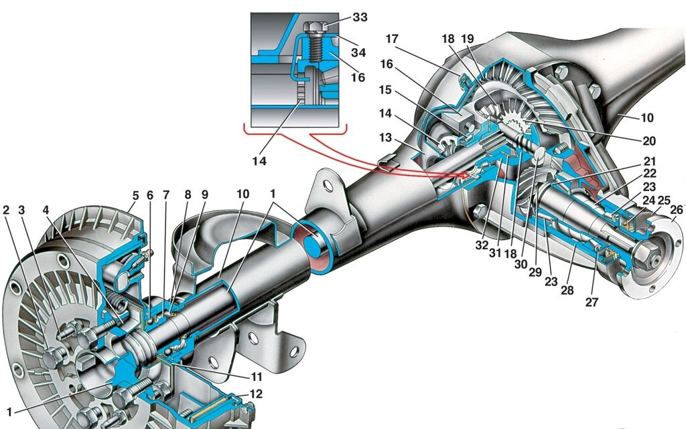
Hình 7.25. Cầu chủ động sử dụng bán trục giảm tải một nửa
1- Bán trục; 2,3,33- Bu long; 4- Giá đỡ; 5- Tang trống phanh; 6- Ổ đỡ cầu; 7- Bạc; 8- Cốc; 9,24- Phớt làm kín; 10- Dầm cầu; 11- Gioăng làm kín; 12- Mâm phanh; 13,28- Vỏ cầu; 14- Đai ốc điều chỉnh; 15,23- Ổ đỡ côn; 16- Mặt bích; 17- Đường thoát khí; 18- Bánh răng vi sai; 19- Bánh răng bị động truyền lực chính; 20- Bánh răng bán trục; 21- Đệm chặn; 22- Vỏ đỡ trục chủ động truyền lực chính; 25- Vỏ chụp; 26- Mặt bích nối với trục các đăng; 27- Tấm chặn; 29- Bánh răng chủ động truyền lực chính; 30- Trục bánh răng vi sai; 31- Đệm tựa; 32- Vỏ vi sai; 34- Tấm định vị cơ cấu điều chỉnh.
Bán trục giảm tải một nửa có ổ phía ngoài là ổ bi cầu hoặc hai ổ thanh lăn côn chịu được lực chiều trục về cả hai phía. Ta thấy điểm tựa của đầu ngoài bán trục giảm một nửa tải là một ổ bi hình côn. Kết cấu như vậy giá thành rẻ hơn, nhưng cần chú ý trong trường hợp này lực chiều trục tác dụng vào phía trong ổ bi phía đối diện. Vì vậy mà phải có miếng đở để truyền lực chiều trục từ bán trục này sang bán trục khác. Loại này có kết cấu tương đối đơn giản nên được sử dụng ở các ô tô con và ô tô tải cỡ nhỏ.
Sơ đồ lực tác dụng lên bán trục được thể hiện trên Error! Reference source not found. Ngoài mô men xoắn từ động cơ truyền tới, nó còn chịu thêm mô men bởi các lực tác dụng trong mặt phẳng thẳng đứng ngang xe như sau: Mô men uốn do phản lực pháp tuyến Rk sinh ra với cánh tay đòn là b trong mặt phẳng thẳng đứng ngang
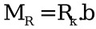
; mô men uốn do phản lực ngang Yk gây ra với cánh tay đòn rk trong mặt phẳng thẳng đứng ngang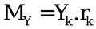
. Trong mặt phẳng thẳng đứng dọc xe bán trục chịu sự tác dụng bởi mô men do các lực sinh ra như sau: Mô men uốn do lực kéo Pk và lực phanh Pp sinh ra lần lượt là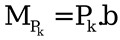
và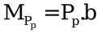
.Bán trục giảm tải ba phần tư
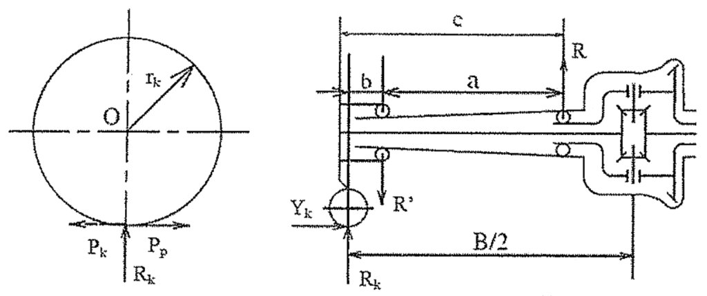
Hình 7.26. Sơ đồ lực tác dụng lên bán trục giảm tải ba phần tư
Với sơ đồ lực tác dụng lên loại bán trục giảm tải ¾ Hình 7.26, một ổ bi đơn phía trong được tỳ trực tiếp lên vỏ vi sai như loại bán trục giảm tải ½, còn ổ ngoài được đặt trên dầm cầu và lồng vào moay ơ bánh xe. Ứng suất uốn trong bán trục giảm tải ¾ phụ thuộc độ cứng của bán trục và ổ bi. Cũng như bán trục giảm tải 1/2 có thể dùng loại moay ơ đơn giản. Khi đầu ngoài bán trục giảm tải ¾ đặt trong ổ côn lăn thẳng (ổ này không chịu được lực chiều trục) thì bánh răng bán trục phải chế tạo liền với bán trục để bán trục có thể tỳ lên trục chữ thập của vi sai. Như vậy tùy theo hướng của lực chiều trục thì một trong hai ổ bi của bánh răng bị động truyền lực chính sẽ phải chịu lực này. Lực chiều trục gây ra mômen uốn làm lệch ổ bi nên làm giảm tuổi thọ của ổ bi. Cũng vì lý do này mà ngày nay người ta ít dùng loại bán trục giảm ¾ tải.
Khi làm việc phần lớn tải trọng của xe được đỡ bởi vỏ cầu, mặc dù phản lực ngang của đường Yk sẽ tác dụng vào bán trục khi quay vòng. Lực và mômen (trừ mô men phanh và mô men kéo) tác dụng lên đầu ngoài của bán trục sẽ nhờ ổ bi đặt trên dầm cầu chịu tải một phần. Ngoài ra bán trục còn chịu mô men bởi các lực tác dụng trong mặt phẳng thẳng đứng ngang xe như sau: Mô men uốn do phản lực pháp tuyến Rk sinh ra với cánh tay đòn là b trong mặt phẳng thẳng đứng ngang ; mô men uốn do phản lực ngang Yk gây ra với cánh tay đòn rk trong mặt phẳng thẳng đứng ngang . Trong mặt phẳng thẳng đứng dọc xe bán trục chịu sự tác dụng bởi mô men do các lực sinh ra như sau: Mô men uốn do lực kéo Pk và lực phanh Pp sinh ra lần lượt là và .
Bán trục giảm tải hoàn toàn
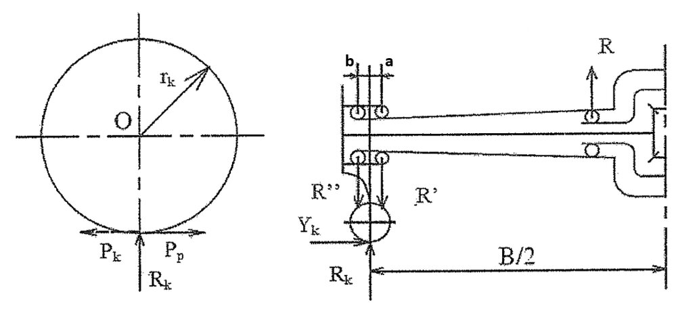
Hình 7.27. Sơ đồ lực tác dụng lên bán trục giảm tải hoàn toàn
Với loại bán trục giảm tải hoàn toàn Hình 7.27 chỉ khác với loại ¾ là gối đỡ phía ngoài gồm hai ổ đỡ côn 21 và 24 đặt gần nhau, ổ bi đơn phía trong 6 vẫn được tỳ trực tiếp lên vỏ vi sai. Đầu phía trong của bán trục 8 có then hoa sẽ ăn khớp lỗ then hoa ở bánh răng bán trục của bộ vi sai còn đầu ngoài được kẹp chặt với moay ơ bánh xe bằng các gu dông. Trong các lỗ bích đầu trục có một lỗ gia công ren và lắp bu lông vào đó. Nó được dùng để tháo bán trục ra khỏi cầu xe khi cần thiết.
Hai ổ thanh lăn côn 21, 24 có vòng trong được lắp lên vỏ 19 của bán trục 20 còn vòng ngoài lắp lên moay ơ bánh xe. Điều chỉnh khe hở các ổ thanh lăn côn này và cố định chúng lên vỏ 19 của bán trục bằng đai ốc điều chỉnh ở đầu trục, các tấm đệm và có chốt định vị với đai ốc hãm.
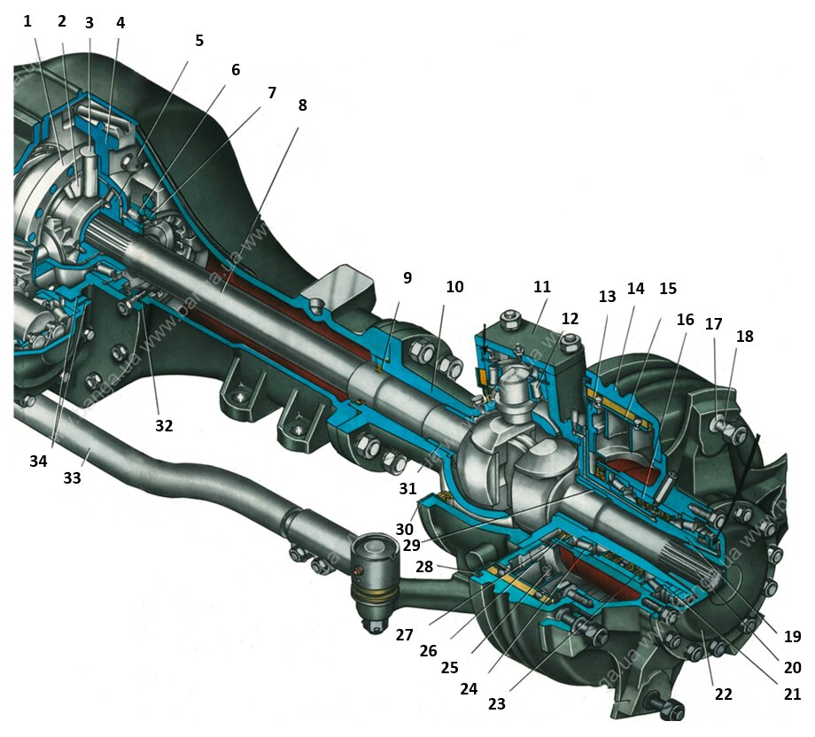
Hình 7.28. Cầu chủ động sử dụng bán trục giảm tải hoàn toàn
1- Vỏ bộ vi sai; 2- Bánh răng vi sai; 3- Trục bánh răng vi sai; 4- Bánh răng bị động truyền lực chính; 5- Bánh răng bán trục; 6- Ổ bi đỡ trụ; 7- Đai ốc điều chỉnh; 8,20- Bán trục; 9,23,26,34- Phớt làm kín; 10- Vỏ cầu; 11- Nắp; 12- Ổ bi đỡ côn; 13- Mâm phanh; 14- Tang trống; 15- Guốc phanh; 16- Bạc của cơ cấu bơm lốp; 17- Vòng đệm; 18- Bu long; 19- Vỏ của bán trục; 21,24- Ổ bi côn; 22- Nắp đầu trục; 25- Lò xo hồi vị; 27- Mặt bích với mâm bánh xe; 28- Vòng liên kết với mâm phanh; 29,31- Bạc lót; 30- Bát xoay; 32- Gioăng làm kín; 33- Thanh kéo ngang.
Vỏ cầu xe với kiểu bố trí bán trục loại này sẽ đỡ toàn bộ tải trọng của xe nên bán trục chỉ dẫn động bánh xe. Do vậy tránh được lực tác dụng bán trục. Kiểu này thường dùng cho xe ô tôt chở khách, xe tải loại vừa và lớn vì nó chịu được tải trọng lớn. Về mặt lý thuyết thì bán trục chỉ chịu có mômen xoắn. Nhưng trong thực tế do biến dạng đàn hồi của dầm cầu, do sai sót trong chế tạo (sự không đồng trục của mayơ bánh xe và bánh răng bán trục của vi sai) khó giữ được bán trục vuông góc với mặt bích. Vì vậy khi siết đai ốc phát sinh các biến dạng uốn bán trục và đầu bên phải bán trục sẽ tựa lên thành ổ bánh răng bán trục.
Trong quá trình làm việc bán trục chỉ chịu mô men xoắn từ động cơ truyền xuống hoặc mô men do lực kéo và lực phanh sinh ra. Các lực như lực kéo Pk, lực ngang Yk và phản lực pháp tuyến Rk sẽ không truyền đến bán trục mà chỉ truyền đến dầm cầu.
b. Bán trục trên hệ thống treo độc lập
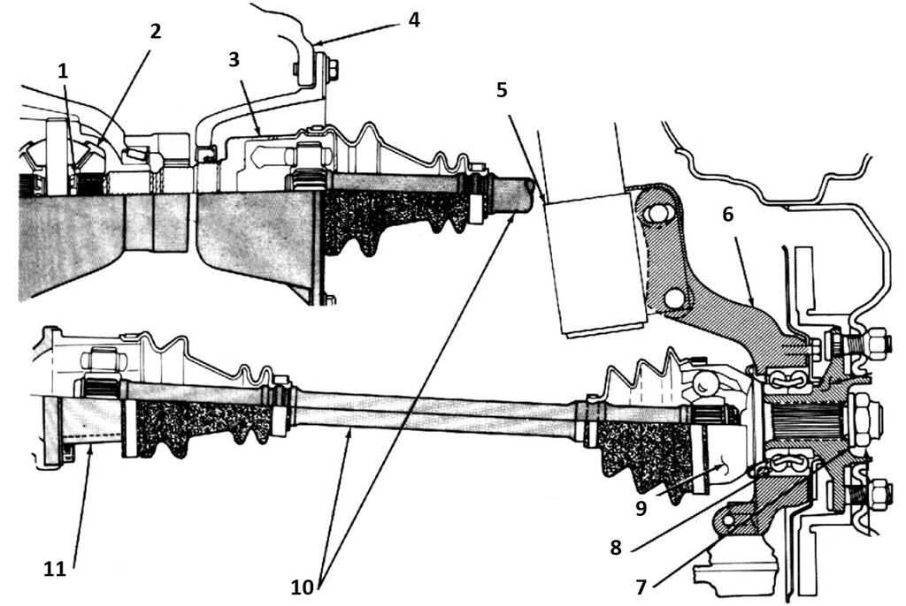
Hình 7.29. Cấu tạo bán trục trên hệ thống treo độc lập
1- Bánh răng bán trục; 2- Vỏ vi sai; 3- Vỏ của khớp các đăng Tripol; 4- Giá đỡ; 5- Trụ lái đứng; 6- Ngõng trục; 7- Đai ốc đầu trục; 8- Ổ đỡ; 9- Khớp các đăng Rzeppa; 10- Bán trục; 11- Khớp các đăng Tripol.
Những ô tô có cầu chủ động với hệ thống treo độc lập thường chế tạo theo kiểu bán trục rời. Bán trục rời thường được dùng khi bộ vi sai gắn chắc chắn trên khung xe. Sử dụng khớp các đăng đồng tốc trên bán trục là cần thiết để cho phép hệ thống treo dịch chuyển lên xuống trong quá trình xe chuyển động. Kết cấu như vậy đảm bảo độ êm dịu chuyển động, vì bánh xe có thể dịch chuyển lên xuống trong mặt phẳng thẳng đứng khi đi trên đường có biên dạng mấp mô. Bán trục khi truyền mômen từ bộ vi sai đến các bánh xe chủ động phải thỏa mãn hai yêu cầu sau:
- Nó phải có cơ cấu thay đổi chiều dài bán trục khi các bánh xe dịch chuyển lên xuống.
- Do các bánh trước vừa là bánh dẫn hướng, vừa là bánh chủ động nên các bán trục phải có khả năng đảm bảo thay đổi về góc khi đang lái và đảm bảo điều kiện đồng tốc khi truyền mô men.
Với truyền động loại này bán trục trên dầm cầu cắt sẽ dùng các khớp các đăng đồng tốc khác nhau. Khớp các đăng phía bánh xe được sử dụng rộng rãi nhất là khớp đồng tốc Rzeppa, khớp phía bộ vi sai sử dụng khớp Tripol vì có góc lệch trục lớn hơn.
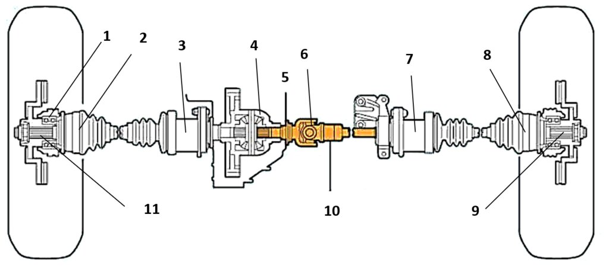
Hình 7.30. Bán trục dùng thêm trục trung gian
1- Ổ đỡ; 2,8- Khớp Rzeppa; 3,7- Khớp Tripol; 4- Vỏ vi sai; 5- Nạng; 6-Khớp các đăng chữ thập; 9,11- Trục bánh xe; 10- Trục trung gian.
Trên Hình 7.30 thể hiện sơ đồ cấu tạo bán trục sử dụng thêm một trục trung gian 10 được gắn ở phía bán trục dài hơn. Vì vậy hai bán trục bên trái và bên phải có thể làm cùng chiều dài. Kiểu bán trục này được sử dụng ở nhiều xe mà có sự chênh lệch lớn về chiều dài giữa hai bán trục lớn và nó thường được dùng ở xe có động cơ và hộp số đều đặt nằm ngang.
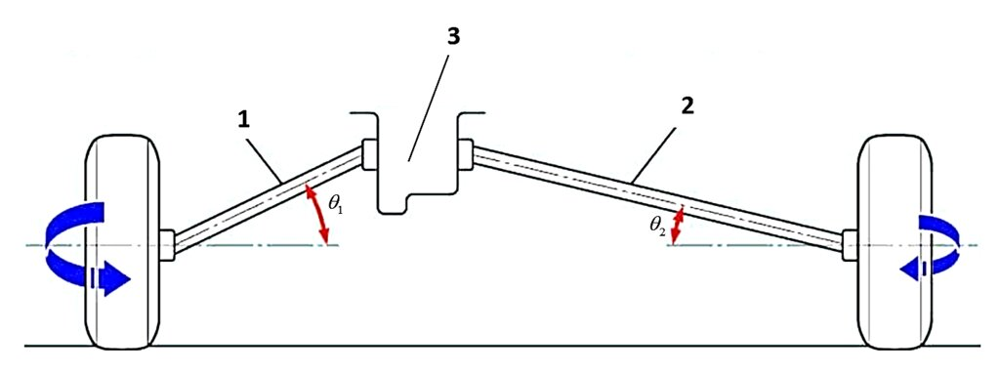
Hình 7.31. Sơ đồ thể hiện góc lệch của hai bán trục
1- Bán trục phía bên trái; 2- Bán trục phía bên phải; 3- Vỏ cầu;
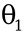
- Góc lệch của bán trục trái so với tâm trục bánh xe; - Góc lệch của bán trục bên phải so với tâm trục bánh xe.
- Góc lệch của bán trục bên phải so với tâm trục bánh xe.
Trên Hình 7.31 thể hiện sự chệnh lệch chiều dài giữa hai bán trục làm xuất hiện hiện tượng tự lái. Khi ô tô khởi hành sau đó tăng ga đột ngột, đầu xe bị nâng lên và góc nghiêng ,
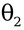
(so với tâm trục bánh xe) của bán trục lớn nên có xu hướng sinh ra một mômen làm các bánh xe xoay quanh trục thẳng đứng của khớp ngoài vào phía trong. Mô men này càng lớn khi góc nghiêng của bán trục càng lớn. Vì vậy, như Hình 7.31 mômen sinh ra ở phía bán trục ngắn hơn trong hai bán trục (bán trục có góc nghiêng θ1 lớn hơn) có xu hướng làm bánh xe quay vào trong sẽ lớn hơn, trong khi mô men của trục dài hơn (trục có góc nghiêng θ2) sẽ nhỏ hơn, nên xe có xu hướng quay về phía bán trục dài.Do đó một phương pháp để ngăn cản sự tự lái như trên là lắp thêm một trục trung gian 10 như Hình 7.30, thì khi đó có thể làm hai bán trục có chiều dài bằng nhau. Nếu dùng phương pháp này, góc nghiêng θ1 và θ2 của hai bán trục sẽ bằng nhau nên mô men làm các bánh xe phía trước xoay vào trong sẽ khử lẫn nhau và đảm bảo được tính ổn định chuyển động thẳng của xe.